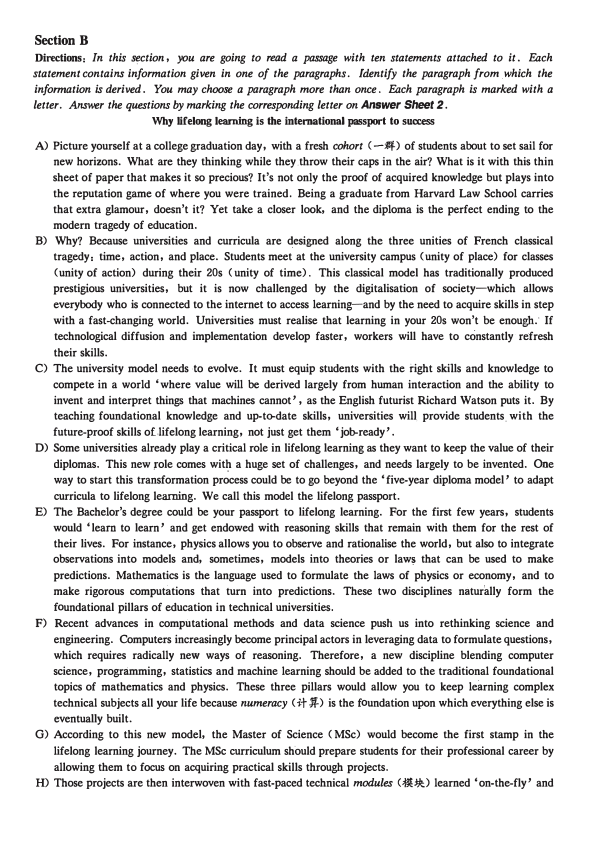
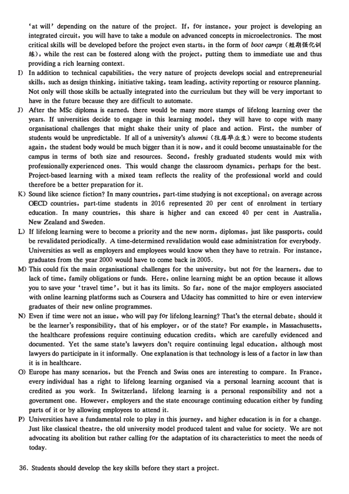
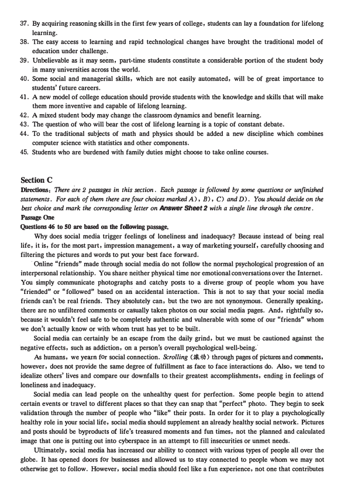
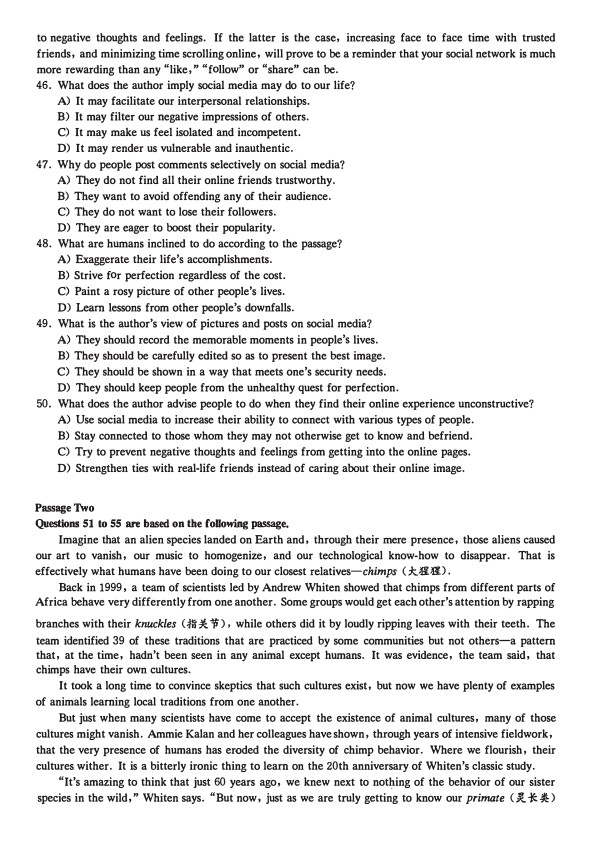
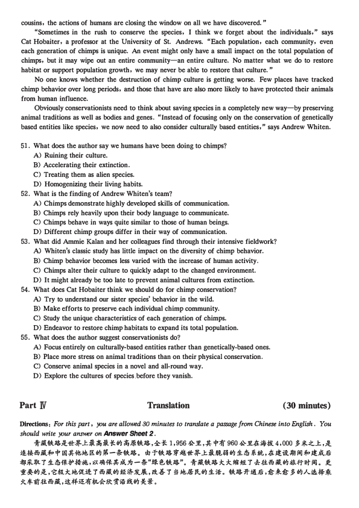

第 1 / 6 页

Part I
Writing
( 30 minutes)
Directions: For this part , you are allowed 30 minutes to write an essay on why students should be encouraged
to develop creativity. You should write at least 150 words but no more than 200 words.
Part I
Listening Comprehension
( 30 minutes)
&ijij: lt-=f 2020 � 12 7'f.l-.½l@/-7011!JrjJ '*1A:Jml!JrjJ.!jfilI01pg.§fflliiJ, .R:m:iz1PJJ!PIMfJ!:iF
fffJ, 2JlttE*1A:lm'P3-l'fll4tlilJe.
Part l[
Reading Comprehension
( 40 minutes)
Section A
Directions: In this section, there is a passage with ten blanks. You are required to select one word for each
blank from a list of choices given in a word bank following the passage. Read the passage through carefully
before making your choices. Each choice in the bank is identified by a letter. Please mark the co"esponding
letter for each item on Answer Sheet 2 with a single line through the centre. You may not use any of the
words in the bank more than once.
Social distancing is putting people out of work, canceling school and tanking the stock market. It has
been
26
by fear, and it is creating even more fear as money problems and uncertainty grow.
However, at its core is love, and a sacrifice to protect those most _27_ to the coronavirus' (b.:fk.c
_.,) effectdthe elderly, people with compromised immune systems, and those whose life-saving resources
would be used up by a
28
epidemic.
Americans make life-saving decisions every day as a matter of course. We cut food into bite-sized
pieces, we wear seatbelts, and we take care not to exceed the speed limit. But social distancing is
29
in that it is completely self-sacrificing. Those who will benefit may be the elderly relatives of
the
30
person we didn't pass in Starbucks, on the subway, or in the elevator.
Social distancing is millions of people making hundreds of sacrifices to keep the elderly alive. It
doesn't include the - 31
-- to run from . society or make an excuse to avoid one's obligations-such as
life-saving medical work or the parental obligation to buy groceries. What it does include is applying love
through caution. And in doing so, it offers an
32
opportunity for those who care about the elderly
to find new ways· to love them.
If we're not
33
as much in our normal work or school, we have extra time to call parents and
grandparents. We can also ask elderly relatives how to best support theme- and use our sacrifices
as an opportunity to bring us, our community and the worldf-·
A) amazing
B) closer
C) driven
D) engaged
E) magignant
F) oppressing
G) premises
H) random
I) sentimentally
J) spiritually
K) temptations
L) thriftier
M) tickled
N) unique
0) vulnerable
2020年12月大学英语六级考试真题(三)
查看 / 复制本页文字
本页源文件的文字编码有异常。原卷显示正常；复制文字需对照原卷核查。
Part I Writing ( 30 minutes) Directions: For this part , you are allowed 30 minutes to write an essay on why students should be encouraged to develop creativity. You should write at least 150 words but no more than 200 words. Part I Listening Comprehension ( 30 minutes) &ijij: lt-=f 2020 � 12 7'f.l-.½l@/-7011!JrjJ '*1A:Jml!JrjJ.!jfilI01pg.§fflliiJ, .R:m:iz1PJJ!PIMfJ!:iF fffJ, 2JlttE*1A:lm'P3-l'fll4tlilJe. Part l[ Reading Comprehension ( 40 minutes) Section A Directions: In this section, there is a passage with ten blanks. You are required to select one word for each blank from a list of choices given in a word bank following the passage. Read the passage through carefully before making your choices. Each choice in the bank is identified by a letter. Please mark the co"esponding letter for each item on Answer Sheet 2 with a single line through the centre. You may not use any of the words in the bank more than once. Social distancing is putting people out of work, canceling school and tanking the stock market. It has been 26 by fear, and it is creating even more fear as money problems and uncertainty grow. However, at its core is love, and a sacrifice to protect those most _27_ to the coronavirus' (b.:fk.c _.,) effectdthe elderly, people with compromised immune systems, and those whose life-saving resources would be used up by a 28 epidemic. Americans make life-saving decisions every day as a matter of course. We cut food into bite-sized pieces, we wear seatbelts, and we take care not to exceed the speed limit. But social distancing is 29 in that it is completely self-sacrificing. Those who will benefit may be the elderly relatives of the 30 person we didn't pass in Starbucks, on the subway, or in the elevator. Social distancing is millions of people making hundreds of sacrifices to keep the elderly alive. It doesn't include the - 31 -- to run from . society or make an excuse to avoid one's obligations-such as life-saving medical work or the parental obligation to buy groceries. What it does include is applying love through caution. And in doing so, it offers an 32 opportunity for those who care about the elderly to find new ways· to love them. If we're not 33 as much in our normal work or school, we have extra time to call parents and grandparents. We can also ask elderly relatives how to best support theme- and use our sacrifices as an opportunity to bring us, our community and the worldf-· A) amazing B) closer C) driven D) engaged E) magignant F) oppressing G) premises H) random I) sentimentally J) spiritually K) temptations L) thriftier M) tickled N) unique 0) vulnerable 2020年12月大学英语六级考试真题(三)
第 2 / 6 页

Section B
Directions: In this sGction, you are going to read a passage with ten statements attached to it. Each
statement contains information given in one of the paragraphs. Identify the paragraph from . which the
information is derived. You may choose a paragraph more than once. Each paragraph is marked with a
letter. Answer the questions by marking the corresponding letter on Answer Sheet 2.
Why lifelong learning is the international imsport to success
A) Picture yourself at a college graduation day, with a fresh cohort ( -Jf) of students about to set sail for
new horizons. What are they thinking while they. throw their caps in the air? What is it with this thin
sheet of paper that makes it so precious? It's not only the proof of acquired knowledge but plays into
the reputation game of where you were trained. Being a graduate from Harvard Law School carries
that extra glamour, doesn't it? Yet take a closer look, and the diploma is the perfect ending to the
modem tragedy of education.
B) Why? Because universities and curricula are oesigned along the three unities of French classical
tragedy: time, action, and place. Students meet at the university campus (unity of place) for classes
( unity of action) during their 20s ( unity of time). This classical model has traditionally produced
prestigious universities, but it is now challenged by the digitalisation of society-which allows
everybody who is connected to the internet to access learning-and by the need to acquire skills in step
with a fast-changing world. Universities must realise that learning in your 20s won't be enough; If
technological diffusion and implementation develop faster, workers will have to constantly· refresh
their skills.
C) The university model needs to evolve. It must equip students with the right skills and knowledge to
compete in a world 'where value will be derived largely from human interaction and the ability to
invent and interpret things that machines cannot' , as the English futurist Richard Watson puts it. By
teaching foundational knowledge and up-to-date skills, universities wiH provide students. with the
future-proof skills of.lifelong learning, not just get them 'job-ready'.
D) Some universities already play a critical role in lifelong learning as they want to keep the value of their
diplomas. This new role comes witp a huge set of challenges, and needs largely to be invented. One
way to start this transformation process could be to go beyond the 'five-year diploma model' to adapt
curricula to lifelong learning. We call this model the lifelong passport.
E) The Bachelor's degree could be your passport to lifelong learning. For the first few years, students
would 'learn to learn' and get endowed with reasoning skills that remain with them for the rest of
their lives. For instance, physics allows you to observe and rationalise the world, but also to integrate
observations into models and, sometimes, models into theories or lawq that can be used to make
predictions. Mathematics is the language used to formulate the laws of physics or economy, and to
make rigorous computations that tum into predictions. These two disciplines natur'ally form the
foundational pillars of education in technical universities.
F) Recent advances in computational methods and data science push us into rethinking science and
engineering. Computers increasingly become principal actors in leveraging data to formulate questions,
which requires radically new ways of reasoning. Therefore, a new discipline blending computer
science, programming, statistics and machine learning should be added to the traditional foundational
topics of mathematics and physics. These three pillars would allow you to keep learning complex
technical subjects all your life because numeracy (it#-) is the foundation upon which everything else is
eventually built.
G) According to this new model, the Master of Science ( MSc) would become the first stamp in the
lifelong learning journey. The MSc curriculum should prepare students for their professional career by
allowing them to focus on acquiring practical skills through projects.
H) Those projects are then interwoven with fast-paced technical modules (;f;i#t) learned 'on-the-fly' and
查看 / 复制本页文字
Section B Directions: In this sGction, you are going to read a passage with ten statements attached to it. Each statement contains information given in one of the paragraphs. Identify the paragraph from . which the information is derived. You may choose a paragraph more than once. Each paragraph is marked with a letter. Answer the questions by marking the corresponding letter on Answer Sheet 2. Why lifelong learning is the international imsport to success A) Picture yourself at a college graduation day, with a fresh cohort ( -Jf) of students about to set sail for new horizons. What are they thinking while they. throw their caps in the air? What is it with this thin sheet of paper that makes it so precious? It's not only the proof of acquired knowledge but plays into the reputation game of where you were trained. Being a graduate from Harvard Law School carries that extra glamour, doesn't it? Yet take a closer look, and the diploma is the perfect ending to the modem tragedy of education. B) Why? Because universities and curricula are oesigned along the three unities of French classical tragedy: time, action, and place. Students meet at the university campus (unity of place) for classes ( unity of action) during their 20s ( unity of time). This classical model has traditionally produced prestigious universities, but it is now challenged by the digitalisation of society-which allows everybody who is connected to the internet to access learning-and by the need to acquire skills in step with a fast-changing world. Universities must realise that learning in your 20s won't be enough; If technological diffusion and implementation develop faster, workers will have to constantly· refresh their skills. C) The university model needs to evolve. It must equip students with the right skills and knowledge to compete in a world 'where value will be derived largely from human interaction and the ability to invent and interpret things that machines cannot' , as the English futurist Richard Watson puts it. By teaching foundational knowledge and up-to-date skills, universities wiH provide students. with the future-proof skills of.lifelong learning, not just get them 'job-ready'. D) Some universities already play a critical role in lifelong learning as they want to keep the value of their diplomas. This new role comes witp a huge set of challenges, and needs largely to be invented. One way to start this transformation process could be to go beyond the 'five-year diploma model' to adapt curricula to lifelong learning. We call this model the lifelong passport. E) The Bachelor's degree could be your passport to lifelong learning. For the first few years, students would 'learn to learn' and get endowed with reasoning skills that remain with them for the rest of their lives. For instance, physics allows you to observe and rationalise the world, but also to integrate observations into models and, sometimes, models into theories or lawq that can be used to make predictions. Mathematics is the language used to formulate the laws of physics or economy, and to make rigorous computations that tum into predictions. These two disciplines natur'ally form the foundational pillars of education in technical universities. F) Recent advances in computational methods and data science push us into rethinking science and engineering. Computers increasingly become principal actors in leveraging data to formulate questions, which requires radically new ways of reasoning. Therefore, a new discipline blending computer science, programming, statistics and machine learning should be added to the traditional foundational topics of mathematics and physics. These three pillars would allow you to keep learning complex technical subjects all your life because numeracy (it#-) is the foundation upon which everything else is eventually built. G) According to this new model, the Master of Science ( MSc) would become the first stamp in the lifelong learning journey. The MSc curriculum should prepare students for their professional career by allowing them to focus on acquiring practical skills through projects. H) Those projects are then interwoven with fast-paced technical modules (;f;i#t) learned 'on-the-fly' and
第 3 / 6 页

'at will' depending on the nature of the project. If, for instance, your project is developing an
integrated circuit, you will have to take a module on advanced concepts in microelectronics. The most
critical skills will be developed before the project even starts, in the form of boot camps ( -ti.l m {t-iJ1J
n), while the rest can be fostered along with the project, putting them to immediate use and thus
providing a rich learniog context;
I) In addition to technical capabilities, the very nature of projects develops social and entrepreneurial
skills, such as design thinking, initiative taking, team leading, activity reporting or resource planning.
Not only will those skills be actually integrated into the curriculum but they will be very important to
have in the future because they are difficult to automate.
J) After the MSc diploma is earned, there would be many more stamps of lifelong learning over the
years. If universities decide to engage in this learning model, they will have to cope with many
organisational challenges that might shake their unity of place and action. First, the number of
students would be unpredictable. If all of a university's alumni (..fi,pq:Ik.1.) were to become students
again, the student body would be much bigger than it is now, and it could become unsustainable for the
campus in terms of both size and resources. Second, freshly graduated students would mix with
professionally experienced ones. This would change the classroom dynamics, perhaps for the best.
Project-based learning with a mixed team reflects the reality of the professional world and could
therefore be a better preparation for it.
K) Sound like science fiction? In many countries, part-time studying is not exceptional: on average across
OECD countries, part-time students in 2016 represented 20 per cent of enrolment in tertiary
education. In many countries, this share is higher and can exceed 40 per cent in Australia,
New Zealand and Sweden.
L) If lifelong learning were to become a priority and the new norm, diplomas, just like passports, could
be revalidated periodically. A time-determined revalidation would ease administration for everybody.
Universities as well as employers and employees would know when they have to retrain. For instance,
graduates from the year 2000 would have to come back in 2005.
M) This could fix the main organisational challenges for the university, but not for the learners, due to
rack of time, family obligations or funds. Here, online learning might be an option because it allows
you to save your 'travel time', but it has its limits. So far, none of the major employers associated
with online learning platforms such as Coursera and Udacity has committed to hire or even interview
graduates of their new online programmes.
N) Even if time were not an issue, who will pay for lifelong,Iearning? That'.s the eternsl debate: should it
be the learner's responsibility, that of his employer, or of the state? For example, in Massachusetts,
the healthcare professions require continuing education credits, which are carefully evidenced and
documented. Yet the same state's lawyers don't require continuing legal education, although most
lawyers do participate in it informally. One explanation is that technology is less of a factor in law than
it is in healthcare.
0) Europe has many scenarios, but the French and Swiss ones are interesting to compare .. In France,
every individual has a right to lifelong learning .organised via a pertnal learning account that is
credited as you work. In Switzerland, lifelong learning is a personal responsibility and not a
government one. However, employers and the state encourage continuing education either by funding
parts of it or by allowing employees to attend it.
P) Universities have a fundamental role to play in this journey, and higher education is in for a change.
Just like classical theatre, the old university model produced talent and value for society. We are not
advocating its abolition but rather calling for the adaptation of its characteristics to meet the needs of
today.
36. Students should develop the key skills before they start a project.
查看 / 复制本页文字
'at will' depending on the nature of the project. If, for instance, your project is developing an
integrated circuit, you will have to take a module on advanced concepts in microelectronics. The most
critical skills will be developed before the project even starts, in the form of boot camps ( -ti.l m {t-iJ1J
n), while the rest can be fostered along with the project, putting them to immediate use and thus
providing a rich learniog context;
I) In addition to technical capabilities, the very nature of projects develops social and entrepreneurial
skills, such as design thinking, initiative taking, team leading, activity reporting or resource planning.
Not only will those skills be actually integrated into the curriculum but they will be very important to
have in the future because they are difficult to automate.
J) After the MSc diploma is earned, there would be many more stamps of lifelong learning over the
years. If universities decide to engage in this learning model, they will have to cope with many
organisational challenges that might shake their unity of place and action. First, the number of
students would be unpredictable. If all of a university's alumni (..fi,pq:Ik.1.) were to become students
again, the student body would be much bigger than it is now, and it could become unsustainable for the
campus in terms of both size and resources. Second, freshly graduated students would mix with
professionally experienced ones. This would change the classroom dynamics, perhaps for the best.
Project-based learning with a mixed team reflects the reality of the professional world and could
therefore be a better preparation for it.
K) Sound like science fiction? In many countries, part-time studying is not exceptional: on average across
OECD countries, part-time students in 2016 represented 20 per cent of enrolment in tertiary
education. In many countries, this share is higher and can exceed 40 per cent in Australia,
New Zealand and Sweden.
L) If lifelong learning were to become a priority and the new norm, diplomas, just like passports, could
be revalidated periodically. A time-determined revalidation would ease administration for everybody.
Universities as well as employers and employees would know when they have to retrain. For instance,
graduates from the year 2000 would have to come back in 2005.
M) This could fix the main organisational challenges for the university, but not for the learners, due to
rack of time, family obligations or funds. Here, online learning might be an option because it allows
you to save your 'travel time', but it has its limits. So far, none of the major employers associated
with online learning platforms such as Coursera and Udacity has committed to hire or even interview
graduates of their new online programmes.
N) Even if time were not an issue, who will pay for lifelong,Iearning? That'.s the eternsl debate: should it
be the learner's responsibility, that of his employer, or of the state? For example, in Massachusetts,
the healthcare professions require continuing education credits, which are carefully evidenced and
documented. Yet the same state's lawyers don't require continuing legal education, although most
lawyers do participate in it informally. One explanation is that technology is less of a factor in law than
it is in healthcare.
0) Europe has many scenarios, but the French and Swiss ones are interesting to compare .. In France,
every individual has a right to lifelong learning .organised via a pertnal learning account that is
credited as you work. In Switzerland, lifelong learning is a personal responsibility and not a
government one. However, employers and the state encourage continuing education either by funding
parts of it or by allowing employees to attend it.
P) Universities have a fundamental role to play in this journey, and higher education is in for a change.
Just like classical theatre, the old university model produced talent and value for society. We are not
advocating its abolition but rather calling for the adaptation of its characteristics to meet the needs of
today.
36. Students should develop the key skills before they start a project.
第 4 / 6 页

37. By acquiring reasoning skills in the first few years of college, students can lay a foundation for lifelong
learning.
38. The easy access to learning and rapid technological changes have brought the traditional model of
education under challenge.
39. Unbelievable as it may seem, part-time students constitute a considerable portion of the student body
in many universities across the world.
40. Some social and managerial skills, which are not easily automated, will be of great importance to
students' future careers.
41. A new model of college education should provide students with the knowledge and skills that will make
them more inventive and capable of lifelong learning.
42. A mixed student body may change the classroom dynamics and benefit learning.
43. The question of who will bear the cost of lifelong learning is a topic of constant debate.
44. To the traditional subjects of math and physics should be added a new discipline which combines
computer science with statistics and other components.
45. Students who are burdened with family duties might choose to take online courses.
Section C
Directions: There are 2 passages in this section. Each passage is followed by some questions or unfinished
statements. For each of them there are four choices marked A), B), C) and D). You should decide on the
best choice and mark ihe corresponding letter on Answer Sheet 2 with a single line through the centre.
Passage One
Questions 46 to SO are based on the r ollowing passage.
Why does social media trigger feelings of loneliness and inadequacy? Because instead of being real
life, it is, for the most part, impression management, a way of marketing yourself, carefully choosing and
filtering the pictures and words to put your best face forward.
• Online "friends" made through social ·media do not follow the normal psychological progression of an
interpersonal relationship. You share neither physical time nor emotional conversations over the Internet.
You simply communicate photographs and catchy posts to a diverse· group of people whom you have
"friended" or "followed" based on an accidental interaction. This is not to say that your social inedia
friends can't be real friends. They absolutely can, but the two are not synonymous. Generally speaking,
there are no unfiltered comments or casually taken photos on our social media pages. And, rightfully so,
because it wouldn't feel safe to be completely authentic and vulnerable with some of our "friends" whom
we don't actually know or with whom trust has yet to be built.
Social media can certainly be an escape from the daily grind, but we must be cautioned against the
negative effects, such as addiction, on a person's overall psychological well-being·
As humans, we yearn for social connection. Scrolling O$.#J) through pages of pictures and comments,
however, does not provide the same degree of fulfillment as face to face interactions do. Also, we tend to
idealize others' lives and compare our downfalls to their greatest accomplishments, ending in feelings of
loneliness and inadequacy.
Social media can lead people on the unhealthy quest for perfection. Some people begin to attend
certain events or travel to different places so that they can snap that "perfect" photo. They begin to seek
validation through the number of people who "like" their posts. In order for it to play a psychologically
healthy role in your social life, social media should supplement an already healthy social network. Pictures
and posts should be byproducts of life's treasured moments and fun times, not the planned and calculated
image that one is putting out into cyberspace in an attempt to fill insecurities or unmet needs.
Ultimately, social media has increased our ability to connect with various types of people all over the
globe. It has opened doors for businesses and allowed us to stay connected to people whom we may not
otherwise get to follow. However, social media should feel like a fun experience, not one that contributes
查看 / 复制本页文字
本页源文件的文字编码有异常。原卷显示正常；复制文字需对照原卷核查。
37. By acquiring reasoning skills in the first few years of college, students can lay a foundation for lifelong learning. 38. The easy access to learning and rapid technological changes have brought the traditional model of education under challenge. 39. Unbelievable as it may seem, part-time students constitute a considerable portion of the student body in many universities across the world. 40. Some social and managerial skills, which are not easily automated, will be of great importance to students' future careers. 41. A new model of college education should provide students with the knowledge and skills that will make them more inventive and capable of lifelong learning. 42. A mixed student body may change the classroom dynamics and benefit learning. 43. The question of who will bear the cost of lifelong learning is a topic of constant debate. 44. To the traditional subjects of math and physics should be added a new discipline which combines computer science with statistics and other components. 45. Students who are burdened with family duties might choose to take online courses. Section C Directions: There are 2 passages in this section. Each passage is followed by some questions or unfinished statements. For each of them there are four choices marked A), B), C) and D). You should decide on the best choice and mark ihe corresponding letter on Answer Sheet 2 with a single line through the centre. Passage One Questions 46 to SO are based on the r ollowing passage. Why does social media trigger feelings of loneliness and inadequacy? Because instead of being real life, it is, for the most part, impression management, a way of marketing yourself, carefully choosing and filtering the pictures and words to put your best face forward. • Online "friends" made through social ·media do not follow the normal psychological progression of an interpersonal relationship. You share neither physical time nor emotional conversations over the Internet. You simply communicate photographs and catchy posts to a diverse· group of people whom you have "friended" or "followed" based on an accidental interaction. This is not to say that your social inedia friends can't be real friends. They absolutely can, but the two are not synonymous. Generally speaking, there are no unfiltered comments or casually taken photos on our social media pages. And, rightfully so, because it wouldn't feel safe to be completely authentic and vulnerable with some of our "friends" whom we don't actually know or with whom trust has yet to be built. Social media can certainly be an escape from the daily grind, but we must be cautioned against the negative effects, such as addiction, on a person's overall psychological well-being· As humans, we yearn for social connection. Scrolling O$.#J) through pages of pictures and comments, however, does not provide the same degree of fulfillment as face to face interactions do. Also, we tend to idealize others' lives and compare our downfalls to their greatest accomplishments, ending in feelings of loneliness and inadequacy. Social media can lead people on the unhealthy quest for perfection. Some people begin to attend certain events or travel to different places so that they can snap that "perfect" photo. They begin to seek validation through the number of people who "like" their posts. In order for it to play a psychologically healthy role in your social life, social media should supplement an already healthy social network. Pictures and posts should be byproducts of life's treasured moments and fun times, not the planned and calculated image that one is putting out into cyberspace in an attempt to fill insecurities or unmet needs. Ultimately, social media has increased our ability to connect with various types of people all over the globe. It has opened doors for businesses and allowed us to stay connected to people whom we may not otherwise get to follow. However, social media should feel like a fun experience, not one that contributes
第 5 / 6 页

to negative thoughts and feelings. If the latter is the case, increasing face to face time with trusted
friends, and minimizing time scrolling online, will prove to be a reminder that your social network is much
more rewarding than any "like," "follow" or "share" can be.
46. What does the author imply social media may do to our life?
A) It may facilitate our interpersonal relationships.
B) It may filter our negative impressions of others.
C) It may make us feel isolated and incompetent.
D) It may render us vulnerable and inauthentic.
47. Why do people post comments selectively on social media?
A) They do not find all their online friends trustworthy.
B) They want to avoid offending any of their audience.
C) They do not want to lose their followers.
D) They are eager to boost their popularity.
48. What are humans inclined to do according to the passage?
A) Exaggerate their life's accomplishments.
B) Strive for perfection regardless of the cost.
C) Paint a rosy picture of other people's lives.
D) Learn lessons from other people's downfalls.
49. What is the author's view of pictures and posts on social media?
A) They should record the memorable moments in people's lives.
B) They should be carefully edited so as to present the best image.
C) They should be shown in a way that meets one's security needs.
D) They should keep people from the unhealthy quest for perfection.
50. What does the author advise people to do when they find their online experience unconstructive?
A) Use social media to increase their ability to connect with various types of people.
B) Stay connected to those whom they may not otherwise get to know and befriend.
C) Try to prevent negative thoughts and feelings from getting into the online pages.
D) Strengthen ties with real-life friends instead of caring about their online image.
Passage 1\vo
Questions 51 to 55 are based on the following passage.
Imagine that an alien species landed on Earth and, through their mere presence, those aliens caused
our art to vanish, our music to homogenize, and our technological know-how to disappear. That is
effectively what humans have been doing to our closest relatives-chimps ( :k.-KB).
Back in 1999, a team of scientists led by Andrew Whiten showed that chimps from different parts of
Africa behave very differently from one another. Some groups would get each other's attention by rapping
branches with their knuckles (Wi* ;n, while others did it by loudly ripping leaves with their teeth. The
team identified 39 of these traditions that are practiced by some communities but not others-a pattern
that, at the time, hadn't been seen in any animal except humans. It was evidence, the team said, that
chimps have their own cultures.
It took a long time to convince skeptics that such cultures exist, but now we have plenty of examples
of animals learning local traditions from one another.
But just when many scientists have come to accept the existence of animal cultures, many of those
cultures might vanish. Ammie Kalan and her colleagues have shown, through years of intensive fieldwork,
that the very presence of humans has eroded the diversity of chimp behavior. Where we flourish, their
cultures. wither. It is a bitterly ironic thing to learn on the 20th anniversary of Whiten's classic study.
"It's amazing to think that just 60 years ago, we knew next to notJ.ting of the behavior of our sister
species in the wild," Whiten says. "But now, just as we are truly getting to know our primate ()t *X)
查看 / 复制本页文字
to negative thoughts and feelings. If the latter is the case, increasing face to face time with trusted friends, and minimizing time scrolling online, will prove to be a reminder that your social network is much more rewarding than any "like," "follow" or "share" can be. 46. What does the author imply social media may do to our life? A) It may facilitate our interpersonal relationships. B) It may filter our negative impressions of others. C) It may make us feel isolated and incompetent. D) It may render us vulnerable and inauthentic. 47. Why do people post comments selectively on social media? A) They do not find all their online friends trustworthy. B) They want to avoid offending any of their audience. C) They do not want to lose their followers. D) They are eager to boost their popularity. 48. What are humans inclined to do according to the passage? A) Exaggerate their life's accomplishments. B) Strive for perfection regardless of the cost. C) Paint a rosy picture of other people's lives. D) Learn lessons from other people's downfalls. 49. What is the author's view of pictures and posts on social media? A) They should record the memorable moments in people's lives. B) They should be carefully edited so as to present the best image. C) They should be shown in a way that meets one's security needs. D) They should keep people from the unhealthy quest for perfection. 50. What does the author advise people to do when they find their online experience unconstructive? A) Use social media to increase their ability to connect with various types of people. B) Stay connected to those whom they may not otherwise get to know and befriend. C) Try to prevent negative thoughts and feelings from getting into the online pages. D) Strengthen ties with real-life friends instead of caring about their online image. Passage 1\vo Questions 51 to 55 are based on the following passage. Imagine that an alien species landed on Earth and, through their mere presence, those aliens caused our art to vanish, our music to homogenize, and our technological know-how to disappear. That is effectively what humans have been doing to our closest relatives-chimps ( :k.-KB). Back in 1999, a team of scientists led by Andrew Whiten showed that chimps from different parts of Africa behave very differently from one another. Some groups would get each other's attention by rapping branches with their knuckles (Wi* ;n, while others did it by loudly ripping leaves with their teeth. The team identified 39 of these traditions that are practiced by some communities but not others-a pattern that, at the time, hadn't been seen in any animal except humans. It was evidence, the team said, that chimps have their own cultures. It took a long time to convince skeptics that such cultures exist, but now we have plenty of examples of animals learning local traditions from one another. But just when many scientists have come to accept the existence of animal cultures, many of those cultures might vanish. Ammie Kalan and her colleagues have shown, through years of intensive fieldwork, that the very presence of humans has eroded the diversity of chimp behavior. Where we flourish, their cultures. wither. It is a bitterly ironic thing to learn on the 20th anniversary of Whiten's classic study. "It's amazing to think that just 60 years ago, we knew next to notJ.ting of the behavior of our sister species in the wild," Whiten says. "But now, just as we are truly getting to know our primate ()t *X)
第 6 / 6 页

cousins, the actions of humans are closing the window on all we have discovered."
"Sometimes in the rush to conserve the species, I think we forget about the individuals,'' says
Cat Hobaiter, a professor at the University of St. Andrews. "Each population, each community, even
each generation of chimps is unique. An event might only have a small impact on the total population of
chimps, but it may wipe out an entire community-an entire culture. No matter what we do to restore
habitat or support population growth, we may never be able to restore that culture. "
No one knows whether the destruction of chimp culture is getting worse. Few places have tracked
chimp behavior over long periods, and those that have are also more likely to have protected their animals
from human influence.
Obviously conservationists need to think about saving species in a completely new way-by preserving
animal traditions as well as bodies and genes. "Instead of focusing only on the conservation of genetically
based entities like species, we now need to also consider culturally based entities," says Andrew Whiten.
51. What does the author say we humans have been doing to chimps?
A) Ruining their culture.
B) Accelerating their extinction.
C) Treating them as alien species.
D) Homogenizing their living habits.
52. What is the finding of Andrew Whiten's team?
A) Chimps demonstrate highly developed skills of communication.
B) Chimps rely heavily upon their body language to communicate.
C) Chimps behave in ways quite similar to those of human beings.
D) Different chimp groups differ in their way of communication.
53. What did Ammie Kalan and·her coll±gues find through their intensive fieldwork?
A) Whiten's classic study has little impact on the diversity of chimp behavior.
B) Chimp behavior becomes less varied with the increase of human activity.
C) Chimps alter their cµlture to quickly adapt to the changed environment.
D) It might already be too late to prevent animal cultures from extinction.
54. What does Cat Hobaiter think we should do for chimp conservation?
A) Try to understand our sister species' behavior in the wild.
B) Make efforts to preserve each individual chimp community.
C) Study the unique characteristics· of each generation of chimps.
D) Endeavor to restore chimp habitats to expand its total population.
55. What does the author suggest conservationists do?
A) Focus entirely on culturally-based.entities rather than genetically-based ones.
B) Place more stress on animal traditions than on their physical conservation.
C) Conserve animal species in a novel and all-round way.
D) Explore the cultures of species.before they vanish.
Part 1V
Translation
( 30 minutes)
Directions: For this pa,rt, )OU are allowed 30 minutes to translate a passage from Chinese into English. You
should write )Our answer on Answer Sheet 2.
-tli.².$.:il-t!bff-J:.llitilll-!c³ ´1"².$,¼-!c 1,956 1.e} .£ ,Jt:. t;tr 960 4.'--.1!..t£µ;Ji. 4,ooo j *¶...I:. ,,t
·¸¹ii.ºtOOJt:.»¼g³J-*².$0 ½T².$#¾¿À...t.•Á³ÊËlÃ,.t£ÄÅÆMºÄÇÈ
ÉAt.trit -r ÊËÌ:tf'-itrÍ, ÎÏÐJt:.Jl;EJ-*-'""Ñ@.².$" o -til².$:k.:k.Ò4;ff. -r J:.-a¹1&.³Ó-tt-1t-t 1iil o 3!.
i."Ô³.:il,'t:Õ:k.¼-f:tl! T ¹il³Ö×.t.Jl., Fi-I- T Ø ¼JkÙ³ ÊÚo ².$-1ti!È ,k*k j ³A.1&.if:*
:x..4'� a¹ii.,:i!#Û;liÜÝrit'fx; Þ³ ß¾ o
查看 / 复制本页文字
本页源文件的文字编码有异常。原卷显示正常；复制文字需对照原卷核查。
cousins, the actions of humans are closing the window on all we have discovered." "Sometimes in the rush to conserve the species, I think we forget about the individuals,'' says Cat Hobaiter, a professor at the University of St. Andrews. "Each population, each community, even each generation of chimps is unique. An event might only have a small impact on the total population of chimps, but it may wipe out an entire community-an entire culture. No matter what we do to restore habitat or support population growth, we may never be able to restore that culture. " No one knows whether the destruction of chimp culture is getting worse. Few places have tracked chimp behavior over long periods, and those that have are also more likely to have protected their animals from human influence. Obviously conservationists need to think about saving species in a completely new way-by preserving animal traditions as well as bodies and genes. "Instead of focusing only on the conservation of genetically based entities like species, we now need to also consider culturally based entities," says Andrew Whiten. 51. What does the author say we humans have been doing to chimps? A) Ruining their culture. B) Accelerating their extinction. C) Treating them as alien species. D) Homogenizing their living habits. 52. What is the finding of Andrew Whiten's team? A) Chimps demonstrate highly developed skills of communication. B) Chimps rely heavily upon their body language to communicate. C) Chimps behave in ways quite similar to those of human beings. D) Different chimp groups differ in their way of communication. 53. What did Ammie Kalan and·her coll±gues find through their intensive fieldwork? A) Whiten's classic study has little impact on the diversity of chimp behavior. B) Chimp behavior becomes less varied with the increase of human activity. C) Chimps alter their cµlture to quickly adapt to the changed environment. D) It might already be too late to prevent animal cultures from extinction. 54. What does Cat Hobaiter think we should do for chimp conservation? A) Try to understand our sister species' behavior in the wild. B) Make efforts to preserve each individual chimp community. C) Study the unique characteristics· of each generation of chimps. D) Endeavor to restore chimp habitats to expand its total population. 55. What does the author suggest conservationists do? A) Focus entirely on culturally-based.entities rather than genetically-based ones. B) Place more stress on animal traditions than on their physical conservation. C) Conserve animal species in a novel and all-round way. D) Explore the cultures of species.before they vanish. Part 1V Translation ( 30 minutes) Directions: For this pa,rt, )OU are allowed 30 minutes to translate a passage from Chinese into English. You should write )Our answer on Answer Sheet 2. -tli.².$.:il-t!bff-J:.llitilll-!c³ ´1"².$,¼-!c 1,956 1.e} .£ ,Jt:. t;tr 960 4.'--.1!..t£µ;Ji. 4,ooo j *¶...I:. ,,t ·¸¹ii.ºtOOJt:.»¼g³J-*².$0 ½T².$#¾¿À...t.•Á³ÊËlÃ,.t£ÄÅÆMºÄÇÈ ÉAt.trit -r ÊËÌ:tf'-itrÍ, ÎÏÐJt:.Jl;EJ-*-'""Ñ@.².$" o -til².$:k.:k.Ò4;ff. -r J:.-a¹1&.³Ó-tt-1t-t 1iil o 3!. i."Ô³.:il,'t:Õ:k.¼-f:tl! T ¹il³Ö×.t.Jl., Fi-I- T Ø ¼JkÙ³ ÊÚo ².$-1ti!È ,k*k j ³A.1&.if:* :x..4'� a¹ii.,:i!#Û;liÜÝrit'fx; Þ³ ß¾ o